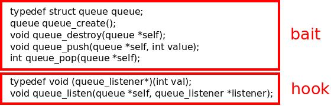

After writing "reusability trap" blog post where I played with evolutionary concepts in the area of sofware engineering I was pointed to the "Selfish Class" essay, which explores similar landscape.
The article is fine although a bit naive. It makes it sound like programmers were in control of the evolution of software. Whereas, in fact, they are just a useful source of random mutation in the self-driven evolutionary process. That is, I guess, both bad news (The horror! We are not in charge!) and good news (Hooray! We are not responsible for the mess after all!)
In this article I am not going to waste time on the mechanism of software evolution, but rather look at what have evolved and how it helps software components to survive in today's dog-eat-dog software jungle.
Many components are quite sophisticated in their survival strategies. They survive and reproduce by being useful to the users. They spread by being sneaky and by tricking users to click on .exe attachments. Some of them thrive in symbiosis with sales people. Some don't care about users at all but are good at being preinstalled on hardware. Free and open software is heavily r-selected and spreads by being laughably cheap to use. Some components keep user's data hostage to avoid being deleted. Some are well-adapted to corporate purchasing process. Other exploit need for interoperability as their primary reproduction mechanism. Yet others rely on standardisation or governmental regulation. And the list goes on and on.
Let's now proceed to a concrete case study. It's anonymised and heavily simplified but in its essence based on components observed in the wild.
What you see below is a dissected API of the component. It consists of two functionally distinct parts labeled "bait" and "hook":

The "bait" is the part that lures the prey. It attracts programmers same way as anglerfish attracts a shrimp. It does so by being useful. C language has no stadard containers so, yeah, it is an attractive proposition. You won't have to implement a queue for the umpteenth time. The implementation is efficient and the API is clean. The "listen" function is a bit weird but we are not going to use it anyway, so who cares?
At this point the library have successfully infected a project. Now it faces a different challenge: To survive the long and turbulent life of the project without being removed or replaced by a different library.
And, as I've argued in the past, if the component was well-behaved, i.e. if it only had the "bait" organ, its chance of surviving in a long-lived project would be slight indeed.
This is where the "hook" becomes useful. The "listen" function allows user to register a callback which will then be used to deliver messages from the queue in asynchronous manner. It sits in the codebase, unused, waiting for an useful idiot to activate it. It may be an intern or a junior developer who stumbles over the function, finds is marginally useful and calls it.
At that point the hook penetrates the meat of the project and gets entangled its most critical entrails. Tight coupling is established between the project and the component. The component is now driving project's control flow, becomes a scheduler of sort, and cannot be removed without putting the business logic at risk.
Imagine yourself trying to rip it out: Can two callbacks be executed in parallel? Does the business logic have to be thread-safe? Are there multiple listeners on a single queue? How are the messages dispatched among them? Is it a simple round-robin? Randomised? Some other mechanism? Does correctness of the business logic depend on a particular order of execution? And even if the tests pass, can we be sure that the business logic wasn't slightly broken? And so on.
However, keep in mind that we've dissected only a part of the component's body. In reality, it is likely to have additional organs like, for example, a "first one is free" marketing strategy where license fees are extracted only after the hook is firmly attached and a circulatory system that brings the money back to sales & marketing which in turn boost its propagation rate.
June 25th, 2015